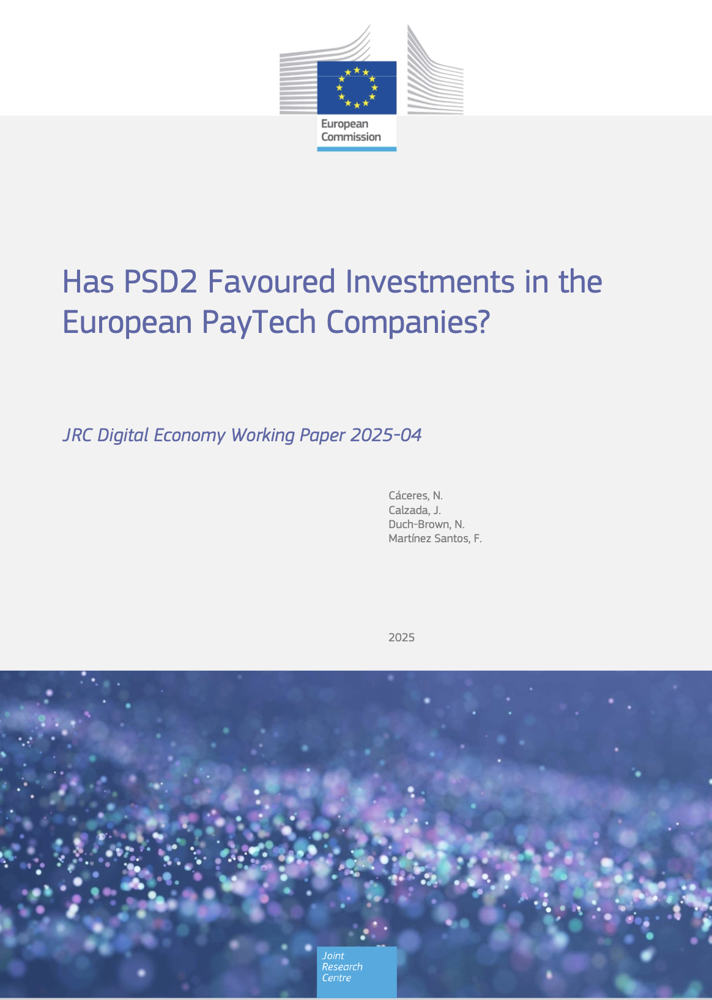

European Commission · JRC · 2025Comisión Europea · JRC · 2025
Has PSD2 Favoured Investments in European PayTech Companies?
Examines how PSD2 shaped investment dynamics in the European PayTech sector.Analiza cómo PSD2 ha influido en la dinámica de inversión del sector PayTech europeo.
View publication →Ver publicación →